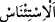

endişe eder. İzin verildiğinde ise rahatlar, sevinir. Bu sebeple izin istemeye gelen birine
endişesinin kalmaması ve gönlünün rahat olması için: Merhabâ! Ehlen ve sehlen; yâni
geniş bir mekân buldun, içinde yabancı bulunmayan bir âileye geldin ve rahat
edeceğiniz hüzünlenmeyeceğiniz bir yere konakladınız.” denilir. Buna göre âyetin
mânâsı “Size izin verilene kadar…” demek olur. Burada kinâye yapılmıştır: İzin istemek
zikredilmiş fakat iznin verilmesi kasdolunmuştur.
Rasûlullah (s.a.)’e “__WORD__ın mânâsı sorulduğunda şöyle buyurmuştur: “O, izin
istemek için evin kapısına gelen adamın ‘Sübhânallah’ demesi, tekbir getirmesi ve
öksürerek boğazını temizliyor gibi yapmasıdır.”[144]
Nisâbü’l-ihtisâb’da der ki: “Bir kadın, izin almadan başkasının evine girse bundan
dolayı hesâba çekilir mi? Cevap: Eğer kadın, evine girdiği kimsenin mahremi ise bunda
bir sakınca yoktur. Kadın, kocasının mahremlerinin evlerine onların izinlerini almadan
girebilir. Bu garip bir görüştür. el-Muhît’ın hırsızlık (serika) bölümünde zikredilmiştir.
Bu sebeple Ebû Hanîfe’ye göre bir kadın kocasının mahremlerinin evlerinden bir şey
çalsa eli kesilmez, hükmü yer almaktadır. Bunun dışındaki izinsiz girişlerde ise
erkeklerde olduğu gibi kadınlar da hesâba çekilir. Çünkü Allah Teâlâ: “Başkalarının
evlerine izin almadan girmeyin” buyurmuştur.”
Evlere izin alarak girmek, dünya ve âhiret saâdetini sağlayan güzel edeblerden biridir.
“Ev halkına selâm vermedikçe girmeyin.” Birinin evine girmek üzere izin isterken:
üç kere “Esselâmü aleyküm, evinize girebilir miyim?” demeli, izin verilirse girmeli ve
ikinci kez selâm vermeli, izin verilmezse dönüp gitmelidir.
“Bu” selâmla birlikte izin istemeniz izin istemeden ansızın girmenizden “sizin için
daha iyidir” isterse annesinin odasına olsun. Çünkü onun da çıplak bulunma ihtimâli
vardır.
Âyette Câhiliyye döneminde evlere girerken verilen selâmın terk edilmesi
öğütlenmektedir. O zaman bir adam yabancı bir eve sabah girdiğinde “iyi sabahlar”,
akşamleyin girdiğinde ise “iyi akşamlar” derdi.
Kâşifî der ki: “Denilmiştir ki bir kimse kendi evine gireceğinde bir kelime ile veya
bir sesle veyahut öksürmekle gelişini bildirsin ki hâne halkı giyinsin ve uygun olmayan
hâllerini bıraksın.”
“Herhalde (bunu) düşünüp anlarsınız.” Size bu, düşünüp öğüt alasınız, gereğini
yerine getiresiniz diye emredildi.
Bilesin ki selâm müslümanların sünneti, cennet ehlinin de selâmlaşma şekli, sevgiyi
celb edici, kin ve nefreti gidericidir.
Rasûlullah (s.a.)’in şöyle buyurduğu rivâyet edilmiştir: “Allah Teâlâ Âdem’i yaratıp
ona ruh üfleyince o aksırdı ve “Hamd Allah’a mahsustur” dedi. Allah Teâlâ da: “Ey
Âdem, Rabb’in sana merhamet etsin, şu meleklerin yanına var ve “es-Selâmü
aleyküm.” de!” buyurdu. Meleklerden bir topluluk oturuyordu. Âdem emri yerine
getirip Rabb’inin huzûruna dönünce Yüce Allah: “İşte senin ve zürriyetinin selâm